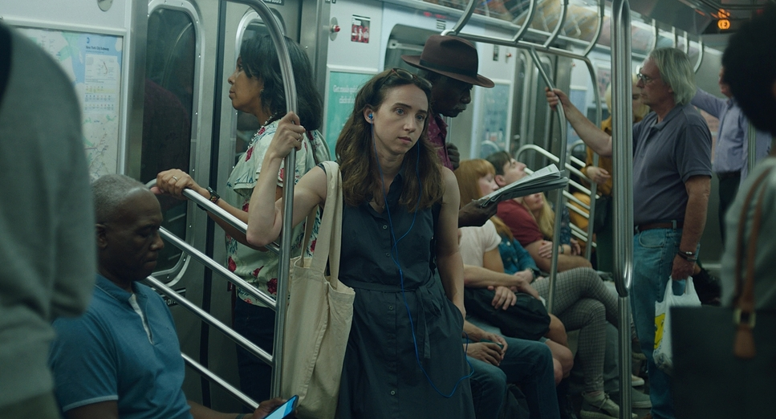
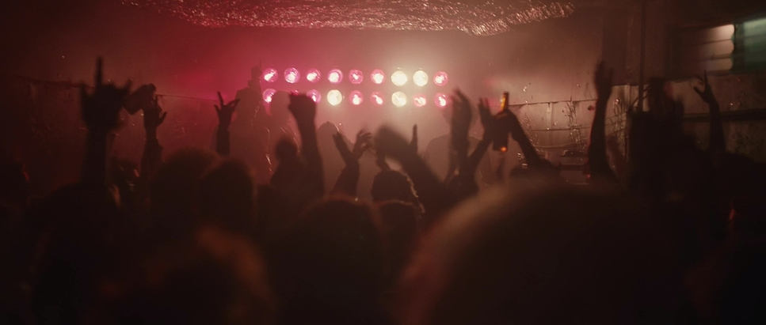
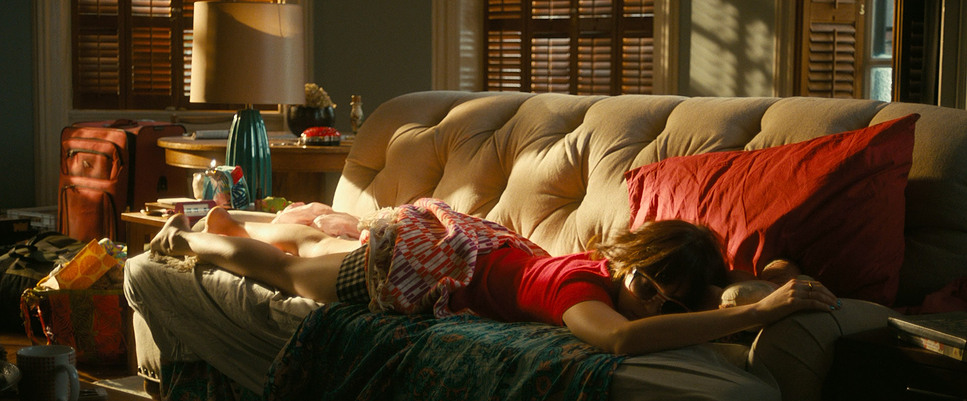
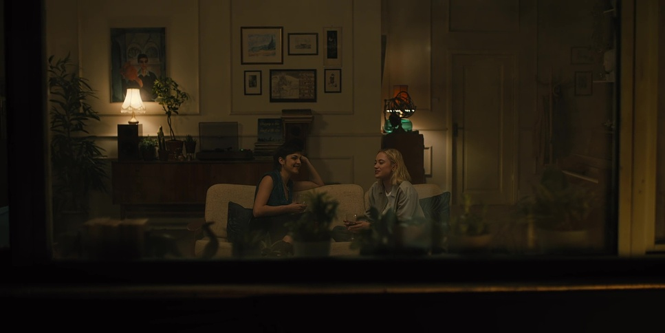
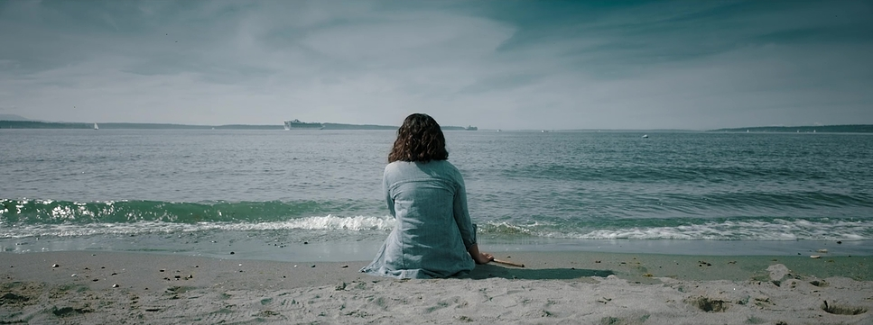
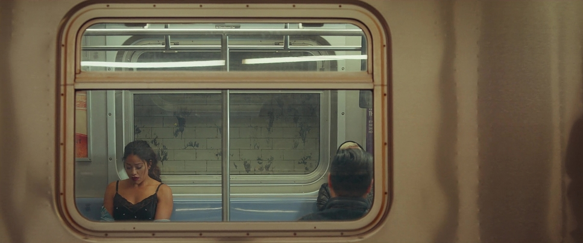
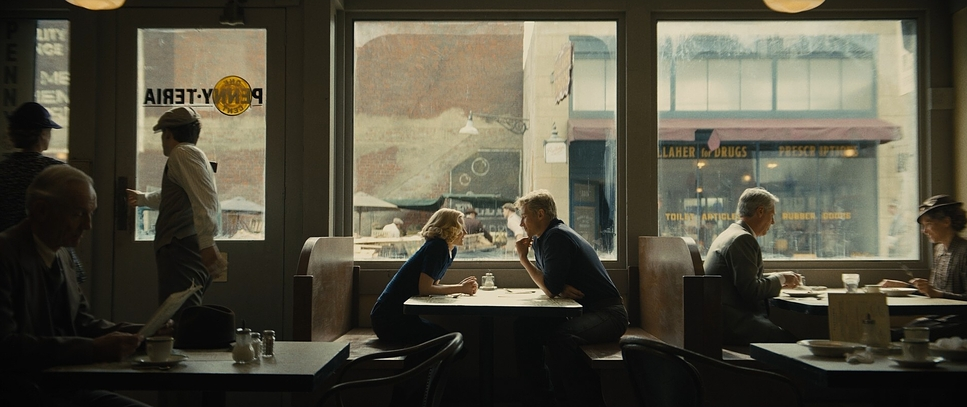

Kyla, a hopeless romantic, thinks she met her soulmate on the skytrain, but didn't get his contact. Eventually, through a series of missed connections, she ends up having to face that coincidence doesn't always mean fate.
synopsis
Kyla is a hopeless romantic. When a stranger on a passing train shares her taste in music, she is convinced she has just met her soulmate. She has no number, no name, and no way to find him, but she does have her best friend Enza. Then the stranger keeps turning up at moments that seem like the universe's way of saying it's on her side. But coincidence is not always destiny, and Kyla may be so busy chasing the connection she imagined that she misses the one in front of her.
Missed Connections is a 12-minute rom com about timing, mixed signals, and learning to tell fate from wishful thinking.
mood board







characters
Kyla
an endless dreamer who wishes the world would be big enough to hold her heart. Smart, hardworking, she feels as though only one thing is missing from her: her other half. She longs for a connection that will make her feel truly seen and understood, but craves it so much that she misses the true opportunity to find it.
Enza
a pragmatic woman who believes in taking control of her life, and who's not afraid of voicing her opinions no matter the price. She feels protective of Kyla and cherishes womanhood. She's not lost hope on love, but is very careful who she lets into her heart.
Nathan
a kind man whose fantasies and desires sometimes make him dance with the limits of his relationship. He is sensitive, has a rich inner world, and is in love with life. But he's ready to burn some bridges to get his way.
Avani
a free-spirited and passionate man who follows his heart. He's learnt not to chase life but rather let it get to him. He's an empath and still struggles to prioritize himself in his relationships.
Lauren
a strong woman who values her independence, but struggles with her fears and insecurities. She does not get vulnerable with many people, and takes her time to open up. She yearns for stability and found it in Nathan, until his work started affecting their relationship.
creative team
- writer/director Lisa Barbera
- producer TBD
- cast TBD